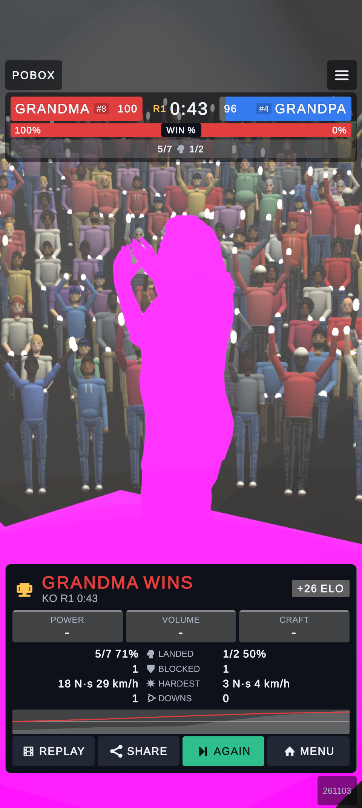
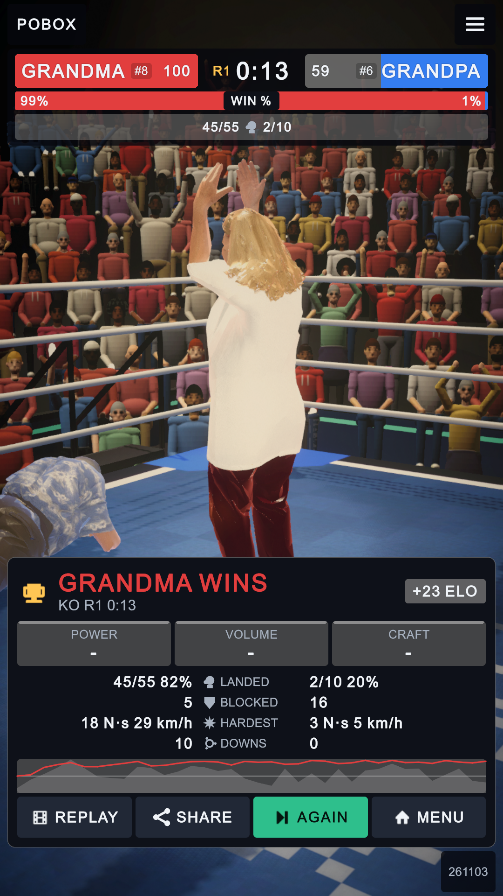
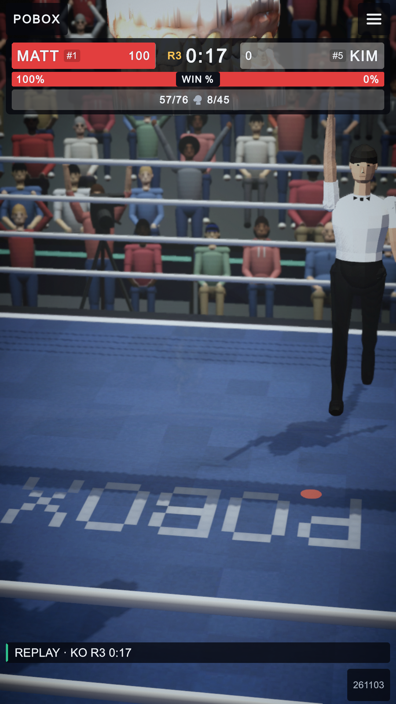
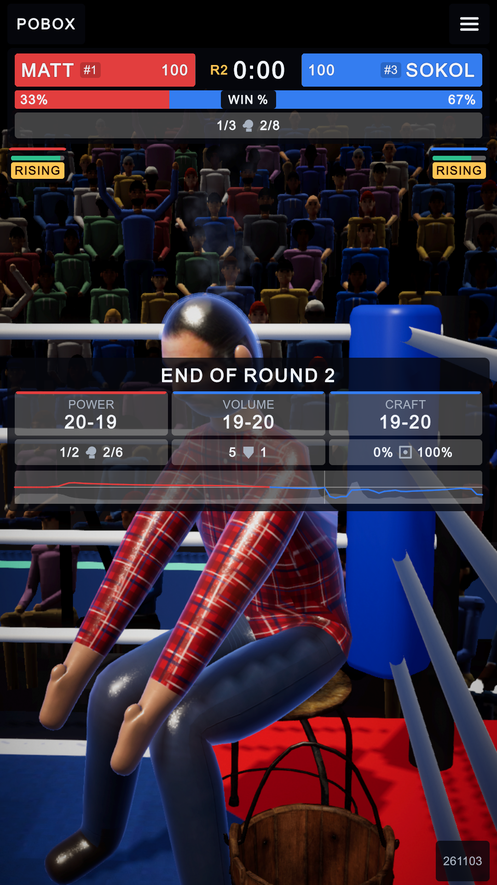
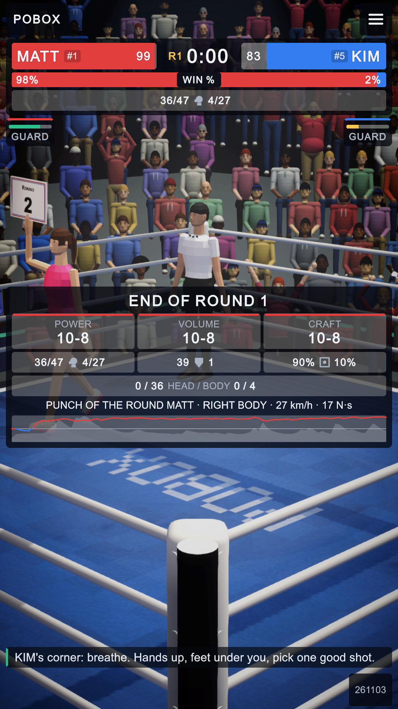
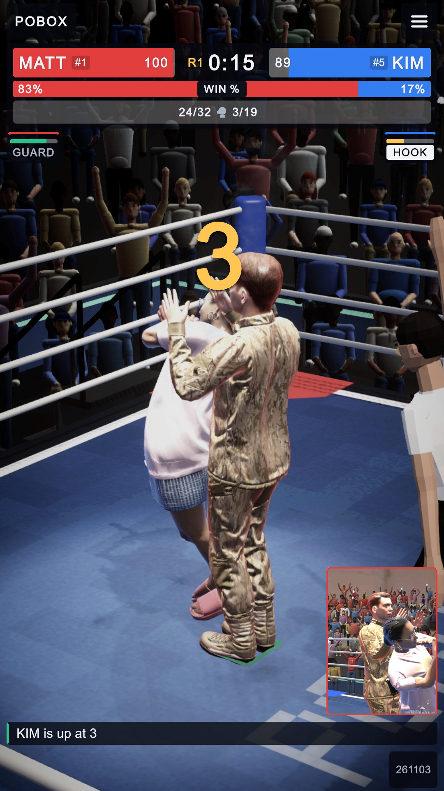
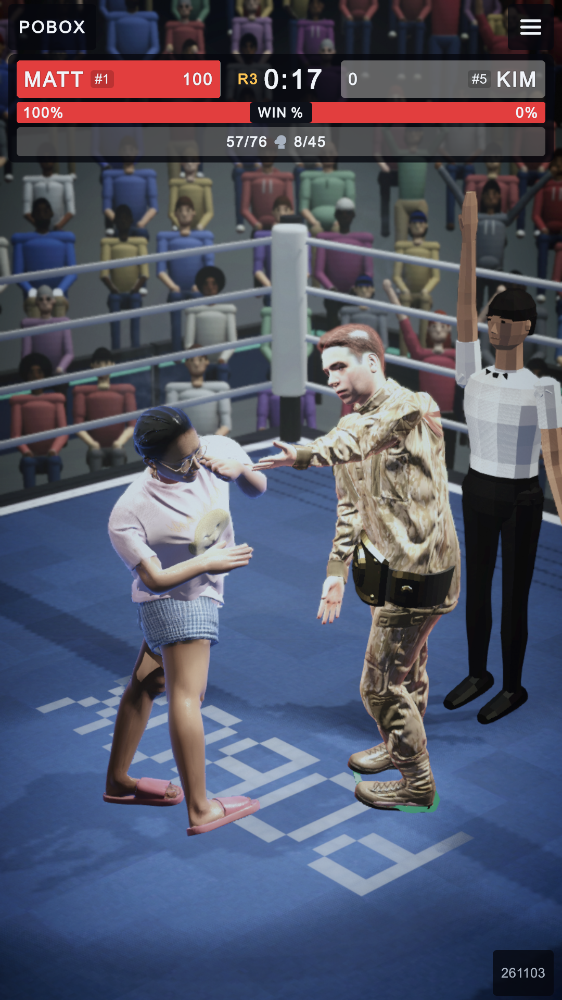
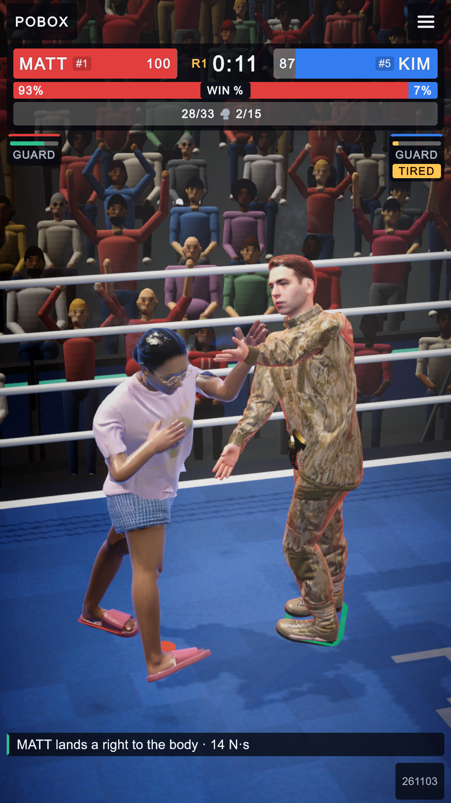

The bout's presentation: what changed (3 November 2026)
Owner's requests: every stoppage a count of ten; boxers sitting in their corners between rounds; the winner's arm up;
a beaten boxer trying slowly to get up; then ten presentation ideas, all done; and the referee and ring-card walker as
trained physics bodies. Changes are marked. Screenshots are the game's 1080 x 1920 capture.
The end of a bout

Before (phone, build 261103 first install): the third
knockdown ended the bout the instant it was called and the ring froze, the loser still upright. (The purple was a stale
Android shader build, fixed by the rebuild.)

After: counted out at ten; the winner's
gloves go up and the loser goes on trying to get up at 60% strength
while the result is shown.

The referee stands by the winner with his
arm up; the announcer says how it was won ("by knockout", "by split decision").
Between rounds

At the bell each boxer walks back to its corner on its
own footwork brain and sits on the stool; the break is 12 s and the cameras take each
corner in turn.

The break card: head / body split and
punch of the round; the ring-card walker crosses with "ROUND 2", the
referee waits in a neutral corner, cornermen in the corners' colours.
During the fight

A count: the referee stands over the boxer down and counts with his arm.
Crowd: camera flashes one in eighty (was one in twelve), the scorer's half of the hall on its
feet, the leader's fans standing more; the timekeeper's ten-second clapper.

After a knockout the punch is replayed by itself;
the top-ranked boxer wears the championship belt; a bad head bruise bleeds.

The referee and the walker are now MuJoCo bodies with
trained footwork brains (models/crew, 0 differences from the trainer), on a collision layer that never meets a
boxer; their brains were in training when this was taken.
Tests with these changes: StateFlow 2/2, OneScreen 74/74 (incl. the layout audit), MjGate 24/24, MjParity 3/3.